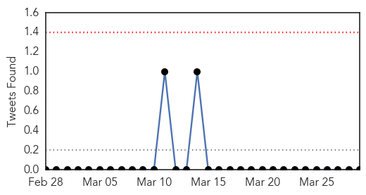
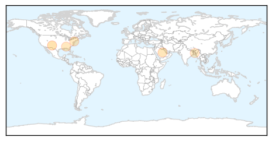
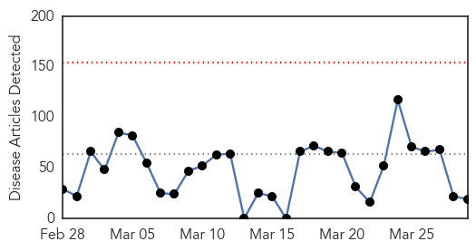
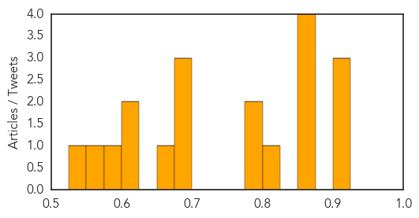

Influenza
30-Day Web Trend
1 alerts, 0 warnings

30-Day Twitter Trend
0 alerts, 0 warnings

Article Locations
Article Confidences

Top Articles:
Top Tweets:
-
No tweets found for Mar 29, 2015
Unknown
30-Day Web Trend
0 alerts, 0 warnings

30-Day Twitter Trend
0 alerts, 0 warnings
Article Locations
Article Confidences
Top Articles:
- 0.920
- TB Still Leading Cause Of Infectious Disease Mortality In Malaysia
- 0.917
- Chicago Tribune
- 0.917
- Chicago Tribune
- 0.866
- Rapid Response Teams Training workshop kicks off
- 0.862
- NewsDaily
- 0.862
- NewsDaily
- 0.862
- NewsDaily
- 0.808
- Mom furious after school sends son home
- 0.798
- Scientists in Canada Being Censored from Covering Dangers of Aluminum in Vaccines
- 0.794
- Nigeria opposition protests presidential vote in oil state
- 0.691
- Zoos clash with sanctuaries over treatment of elephant tuberculosis
- 0.686
- Right-wing UMP claims major victory in local French ballots
- 0.685
- The ‘moderate’ imam who claims ‘all women are selfish’
- 0.655
- Nepal reports 2nd human rabies death at Kathmandu hospital this week
- 0.623
- 14 Seemingly Harmless Things That Could Actually Kill You
- 0.618
- Pakistan ranks 6th among high TB affected countries
- 0.579
- 54 sickened: German eggs linked to UK Salmonella outbreak
- 0.561
- Dr. Harry Cho on unnecessary tests and treatments
- 0.543
- Tangerang Father and Son Die From Bird Flu: Health Ministry
Top Tweets:
-
No tweets found for Mar 29, 2015